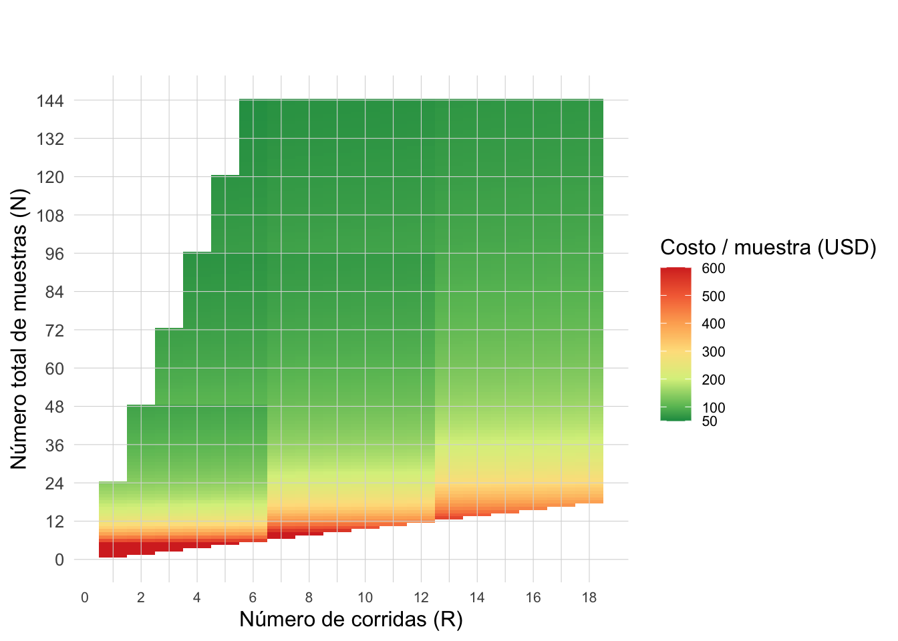
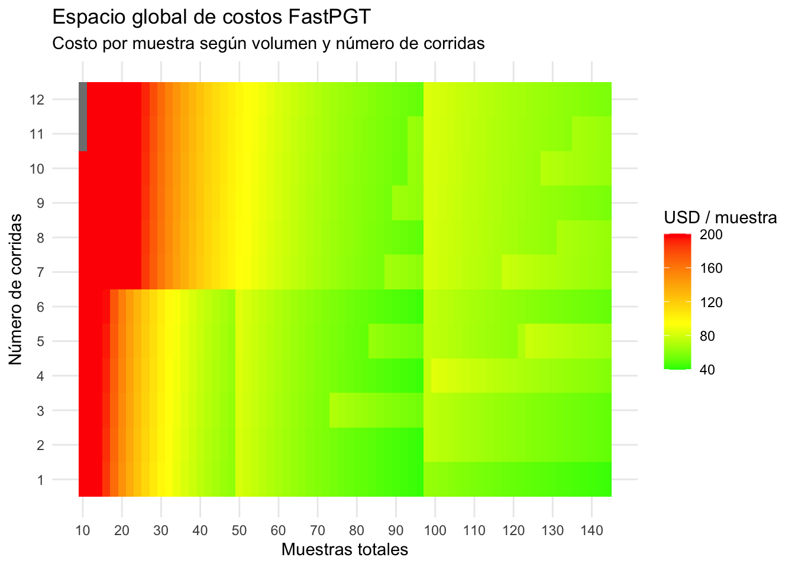

Apéndice Económico
Análisis de costos FastPGT
NotaLinks
Presupuestos: Migliore Laclaustra: WGA phi29-XT. Analytical: 1. MinION + Wask kit + FC + Library Inicial ONT. 2. Starter kit + RAA ONT. 3. RBK.6x24. 4. RBK.6x96
Delivery 4: Documento Principal
1. Introducción al sistema de costos
El modelo económico de PGT con tecnología ONT se basa en la utilización eficiente de insumos genómicos, organizados en tres categorías:
Costos directos por muestra
- WGA (Whole Genome Amplification): amplificación del ADN embrionario. Este costo es estrictamente proporcional al número de muestras y no depende de la estrategia operativa.
Costos variables
- Flow Cells (FC): recurso limitado por:
- número de corridas
- número de muestras acumuladas
Costos amortizables
- RBK (Rapid Barcoding Kit): librería genómica de 6 reacciones y 24 barcodes con capacidad de análisis de 144 muestras.
- RAA (Rapid Adapter Auxiliary): reactivos complementario de 6 reacciones de hasta 24 muestras que permite extender el uso del RBK optimizando los barcodes no utilizados en corridas pequeñas de FastPGT.
ImportanteCondiciones de contorno iniciales
- Se adquiere un RBK completo con capacidad para 144 muestras.
- El número máximo de corridas por FC ≤ 6.
- El número de muestras acumuladas en 1 mismo FC ≤ 48.
- El rendimiento de la libreria puede optimizarse utilizando insumos complementarios (RAA).
- La primera corrida en cada flow cell no requiere lavado.
- Las corridas subsiguientes requieren un ciclo de lavado previo.
El desafío operativo consiste en modelar un sistema dinámico de corridas independientes que minimice el costo por muestra.
2. Formulación del modelo
El costo por muestra se define como:
\[ C_{muestra} = \frac{C_{total}}{N} \]
El costo total del sistema de corridas se define como:
\[ C_{total} = N \cdot C_{WGA} + RBK \cdot C_{RBK} + RAA \cdot C_{RAA} + FC \cdot C_{FC} + (R - FC) \cdot C_{wash} \]
donde:
- \(N\): número total de muestras procesadas
- \(R\): número total de corridas realizadas
- \(RBK\): número de kits Rapid Barcoding requeridos
- \(RAA\): número de kits Rapid Adapter utilizados
- \(FC\): número total de flow cells requeridas
Costos unitarios
- \(C_{WGA}\): costo de amplificación por muestra
- \(C_{RBK}\): costo por kit RBK
- \(C_{RAA}\): costo por kit RAA
- \(C_{FC}\): costo por flow cell
- \(C_{wash}\): costo por ciclo de lavado
Reglas de consumo de uso
\(RBK = \left\lceil \frac{N}{144} \right\rceil\)
\(RAA = \left\lceil \frac{R}{6} \right\rceil\)
\(FC = \max\left( \left\lceil \frac{N}{48} \right\rceil,\ \left\lceil \frac{R}{6} \right\rceil \right)\)
El número de flow cells requeridas está determinado por el recurso que se agota primero:
la capacidad total de muestras procesadas por flow cell o el número máximo de corridas permitido por unidad.
Naturaleza del sistema
A diferencia de modelos lineales clásicos, este sistema presenta:
Discontinuidades (saltos discretos): asociadas a la compra de nuevos insumos.
Restricciones acopladas: donde el uso de flow cells depende simultáneamente de:
- acumulación de muestras,
- número de corridas realizadas previamente.
- esto se evalua antes de cada corrida a través del rendimiento de poros operativos del FC.
Amortización progresiva: donde el costo unitario disminuye al distribuir insumos parcialmente utilizados (ej. RBK) en múltiples corridas mediante RAA.
3. Insumos: costos y rendimiento
| Componente | Costo total (USD) | Rendimiento | Costo unitario |
|---|---|---|---|
| Flow Cell | 1,125.20 | 6 corridas | 187.53 / corrida |
| Wash kit | 194.00 | 6 lavados | 32.33 / lavado |
| RBK Library (24) | 1,300.00 | 144 muestras | 9.03 / muestra |
| RAA114 Extension | 543.00 | 6 corridas | 90.50 / corrida |
| WGA phi29 | 1,890.00 | 100 muestras | 18.90 / muestra |
4. Espacio global de costos
El comportamiento económico global del sistema puede representarse como una función del número total de muestras procesadas (\(N\)) y del número total de corridas realizadas (\(R\)):
\[ C = f(N, R) \]
En esta representación, cada punto del mapa corresponde a un escenario promedio en el cual las \(N\) muestras se distribuyen de la manera más homogénea posible entre \(R\) corridas. Cuando \(N\) no es divisible exactamente por \(R\), el modelo asigna corridas de tamaño \(\lfloor N/R \rfloor\) y \(\lceil N/R \rceil\), preservando la mínima diferencia posible entre corridas.
Esta representación no describe trayectorias clínicas específicas como las simulaciones estocásticas del Apéndice de Costos Simulados, sino un espacio económico promedio que permite visualizar tendencias globales de eficiencia e ineficiencia del sistema.
4.1. Interpretación corta:
Los valores bajos indican configuraciones en las que los insumos se amortizan mejor; los valores altos corresponden a escenarios más fragmentados o con subutilización de recursos.
Idea clave:
El sistema no presenta un óptimo único y continuo, sino múltiples regiones de eficiencia determinadas por restricciones discretas de uso de insumos.
El siguiente heatmap muestra el espacio global de costos, donde se representa el costo promedio por muestra según número total de muestras (N) y corridas (R)
Los espacios vacíos representan combinaciones estructuralmente inviables dentro del sistema, en particular aquellas en las que el número de corridas excede el número total de muestras (\(R > N\)) o que violan las restricciones de capacidad del modelo.
A diferencia de versiones restringidas del modelo, este mapa incluye explícitamente configuraciones altamente subóptimas, como corridas de muy bajo tamaño, permitiendo visualizar de manera explícita las regiones de alto costo asociadas a la fragmentación extrema del sistema.
5. Espacio operativo
Para la toma de decisiones reales, resulta más útil representar el sistema como una función del numero total de muestras o tamaño de corrida (\(n\)) y del número total de corridas acumuladas (\(r\)):
\[ C = f(n, r) \]
En este espacio, cada punto representa una estrategia operativa concreta en la cual todas las corridas tienen un tamaño fijo \(n\), acumuladas a lo largo de \(r\) corridas.
A diferencia del espacio global presentado anteriormente, este análisis se restringe a configuraciones compatibles con el uso de un único kit RBK:
\[ n \cdot r \leq 144 \]
De este modo, el mapa describe exclusivamente el dominio operativo relevante del sistema FastPGT, excluyendo escenarios que implican la adquisición de múltiples kits y que no forman parte del régimen analizado.
Representación combinada: costo absoluto y eficiencia relativa
La figura presenta una representación integrada en la que:
- el color representa la eficiencia relativa respecto al óptimo,
- mientras que la magnitud del valor asociado a cada celda corresponde al costo absoluto por muestra (USD).
La pérdida relativa de eficiencia se define como:
\[ \text{exc}(n,r) = \frac{C(n,r)}{C_{\text{opt}}(r)} - 1 \]
donde \(C_{\text{opt}}(r)\) es el menor costo alcanzable para un número fijo de corridas.
De este modo, el gráfico permite interpretar simultáneamente el costo real del sistema y su desviación respecto al óptimo operativo.

En cada celda, el valor numérico indica el costo absoluto por muestra (USD), mientras que el color indica qué tan lejos se encuentra esa configuración del mejor escenario posible para ese número de corridas.
De este modo, configuraciones con costos absolutos similares pueden presentar eficiencias relativas muy distintas dependiendo de su posición dentro de cada régimen de corridas.
El gráfico revela que la eficiencia del sistema depende críticamente de la organización de las corridas:
- tamaños de corrida grandes \(n \geq 20\) se sitúan sistemáticamente cerca del óptimo
- corridas pequeñas \(n \leq 6\) inducen aumentos abruptos del costo
- el impacto negativo se amplifica a medida que aumenta el número total de corridas
Esto refleja directamente la naturaleza discreta del sistema, dominada por:
- límite de 6 corridas por flow cell
- capacidad máxima de 48 muestras por flow cell
- consumo escalonado de insumos
Las líneas verticales discontinuas marcan las transiciones entre bloques de 6 corridas, indicando el punto en el que es necesario abrir una nueva flow cell.
El mapa permite identificar rápidamente:
- configuraciones cercanas al óptimo
- zonas de operación aceptables
- regiones altamente ineficientes
En particular, evidencia que la eficiencia no depende únicamente del volumen total procesado, sino de cómo se agrupan las muestras en cada corrida.
Relación con el espacio global
El mapa global describe el comportamiento promedio del sistema:
\[ C = f(N, R) \]
mientras que el presente mapa representa configuraciones operativas concretas:
\[ C = f(n, r) \]
Ambas representaciones son complementarias:
- el espacio global captura la tendencia económica
- el espacio operativo describe estrategias de laboratorio
En conjunto, permiten comprender tanto la estructura económica del sistema como las decisiones necesarias para optimizar su desempeño.
6. Conclusiones
El costo por muestra del FastPGT no depende únicamente del volumen total procesado, sino de cómo se distribuyen las muestras entre corridas.
Configuraciones con costos absolutos similares pueden diferir significativamente en eficiencia relativa, evidenciando que la organización operativa del sistema es el principal determinante del desempeño económico.
En particular, la fragmentación en corridas pequeñas genera pérdidas sustanciales de eficiencia, mientras que tamaños de corrida mayores permiten una amortización óptima de los insumos dentro de cada ciclo de flow cell.
Nota
Las ecuaciones analíticas presentadas en este apéndice son compatibles con el simulador utilizado en el Apéndice de Costos Simulados, ya que ambos comparten las mismas variables agregadas de salida —número total de corridas, muestras procesadas, flow cells requeridas, costo total y costo por muestra— así como las mismas reglas generales de consumo de insumos. Sin embargo, el modelo analítico constituye una representación agregada y determinística del sistema, mientras que la simulación reproduce trayectorias secuenciales explícitas de corridas y eventos operativos. Por este motivo, ambos enfoques deben considerarse complementarios y no estrictamente equivalentes.